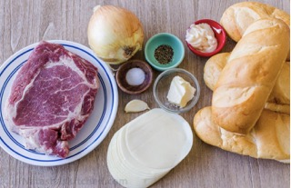
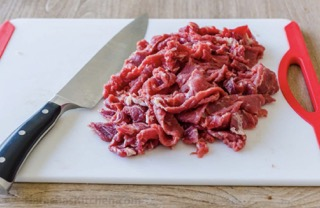
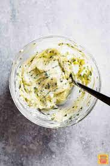
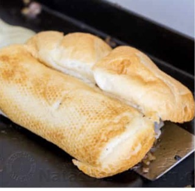
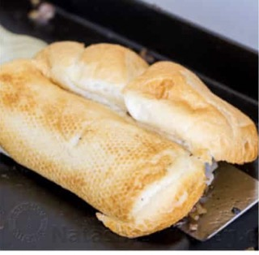

List of Ingredients
1 lb Ribeye steak, trimmed and thinly sliced*, 1/2 tsp Sea salt, or to taste, 1/2 tsp Black pepper, or to taste, 1 sweet onion, (large), diced, 1 green bell pepper (optional), 8 slices provolone cheese, mild (not aged provolone), 4 Hoagie Rolls, sliced 3/4 through, 2 Tbsp unsalted butter, softened, 1 garlic clove, pressed, and 2-4 Tbsp mayonnaise, or to taste
 Step 1 & 2: Slice hoagie rolls 3/4 of the way through with a serrated knife. Dice onions and thinly slice beef. *For easier slicing, cover and freeze your steak for 30-40 minutes (freeze a thicker steak 40 min and a thinner steak 30 min).
In a small bowl, stir together 2 Tbsp softened butter with 1 pressed garlic clove. Spread garlic butter onto the cut sides of 4 hoagie roll. Toast the buns on a large skillet, flat cooktop or griddle on medium heat until golden brown then set aside.


Steps 3 & 4: Add 1 Tbsp oil to your pan/cooktop and sautee diced onions until caramelized then transfer to a bowl. Increase to high heat and add 1 Tbsp oil. Spread the super thinly sliced steak in an even layer. Let brown for a couple of minutes undisturbed then flip and season with 1/2 tsp salt and 1/2 tsp black pepper. Sautee until steak is fully cooked through then stir in the caramelized onions. Step 5 & 6: Divide into 4 even portions and top each with 2 slices of cheese and turn off the heat so the cheese will melt without overcooking the meat. Spread a thin layer of mayo on the toasted side of each roll. Working with one portion at a time, place a toasted bun over each portion and use a spatula to scrape the cheesy beef into your bun as you flip it over. Serve warm!!
 
